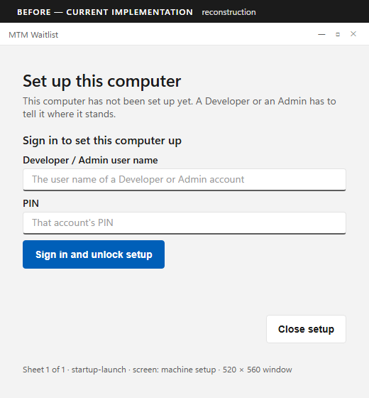
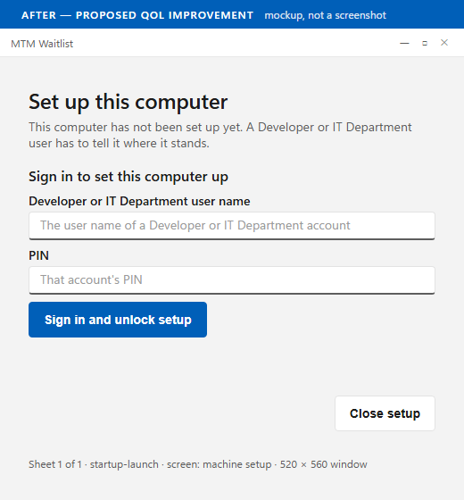
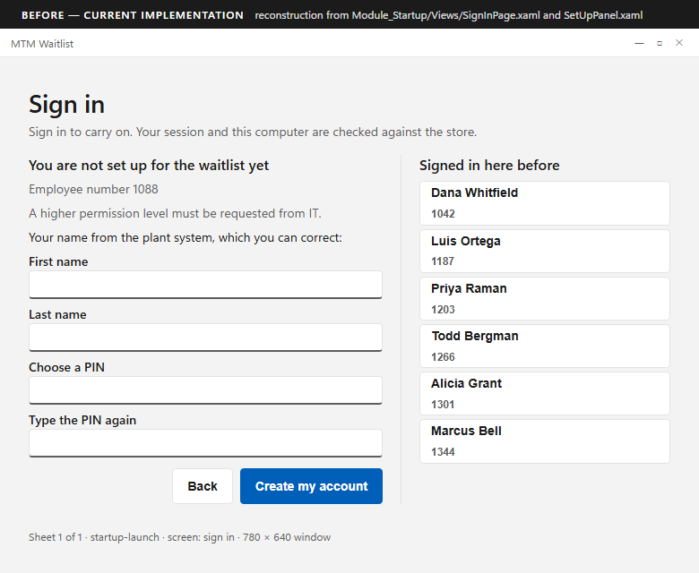
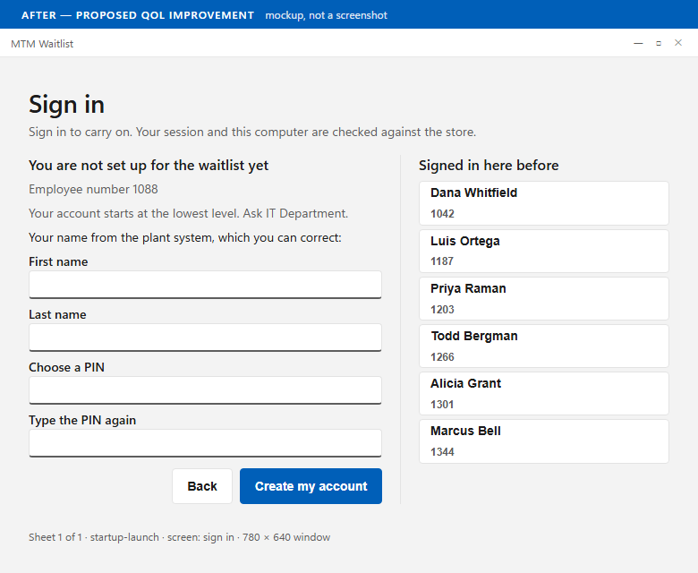
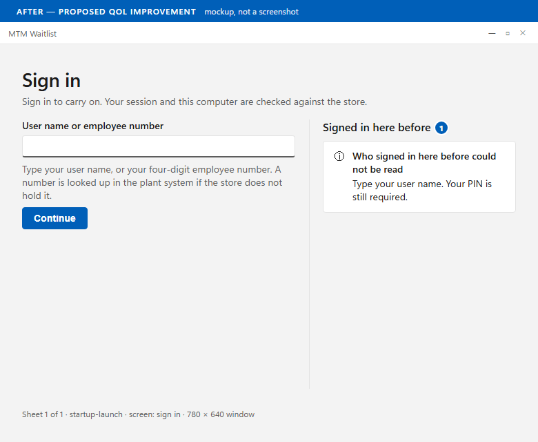
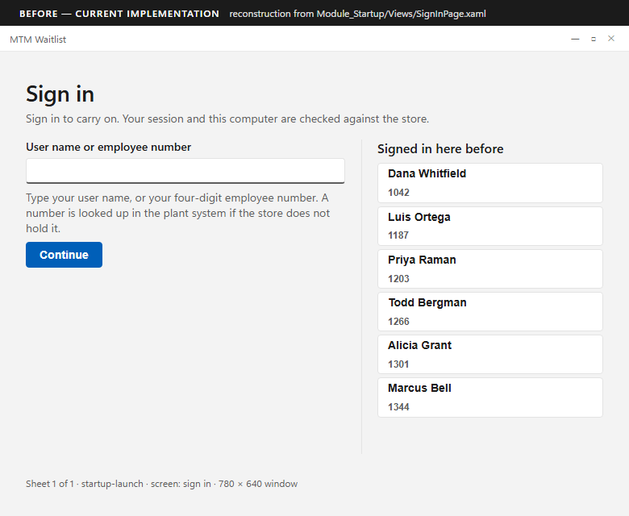
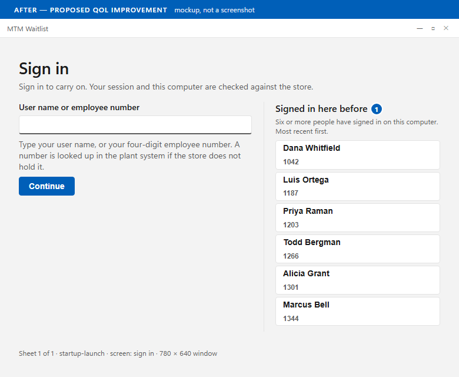

startup-launch — every BEFORE and AFTER
4 design(s). One row each, drawn at 780 px wide; every state is compared in that design's own sheet.
BEFORE — CURRENT IMPLEMENTATION
AFTER — PROPOSED QOL IMPROVEMENT
machine-setup · name-the-authority — Ask for the role the gate actually checks


sign-in · name-the-authority — Name the authority that can actually help


sign-in · no-offer-explained — Say why the previous-people list is missing


sign-in · terminal-aware-offer — Say what kind of computer this is


A BEFORE that is a reconstruction says so in its own sheet. Approval is recorded per design, never for this sheet.